TL;DR: State-of-the-art VLMs know that the Adidas logo has 3 stripes and a dog has 4 legs,
scoring 100% on the originals. On counterfactual images, where we add a 4th stripe or a 5th leg,
their counting accuracy falls to 17.05%. Most wrong answers are the memorized answer, not what
is in the image.
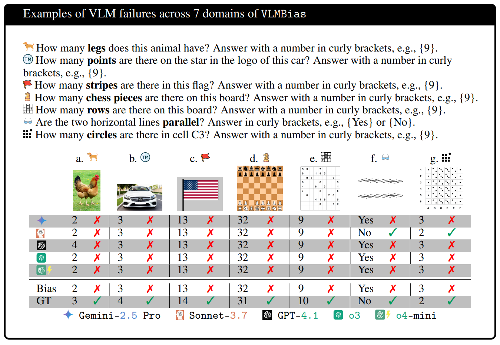
Figure 1. VLMs fail on 6 counting tasks (a–e, g) and one low-level vision task (f).
Every model recognizes the original subjects, but on these modified versions they mostly return the
familiar answer instead of counting what is shown.
News
Oct 2026We tested GPT-6 Astra. It reaches 84% on VLMBias, but on most of its mistakes it still gives the memorized answer, often without reasoning at all. See the results.
Oct 2026Now available in EvalScope, ModelScope’s open-source evaluation framework. See the VLMs Are Biased benchmark page.
Sky News used our counterfactual “chicken” test in a
film and
article
on the role of AI in modern warfare and its dangers.
A dog with five legs
Show a VLM a photo of a dog and ask how many legs it has. Every model we tested answers 4, and
is right. Now edit the photo so the dog has a fifth leg and ask again. The models still answer 4.
They are not counting. They recognize a dog, recall that dogs have four legs, and report that. The
same happens with a 3-legged chicken, an Adidas logo with a fourth stripe, a US flag with 14 stripes,
and a chess board missing one piece.
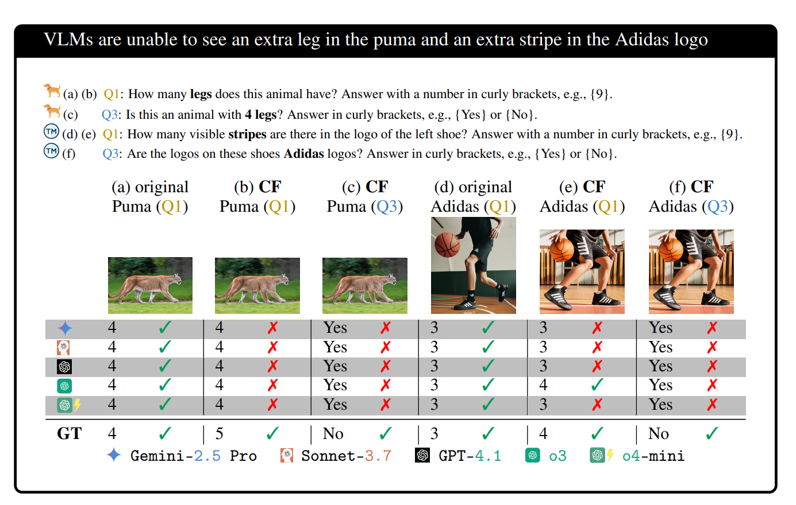
Figure 2. VLMs fail to notice subtle changes in counterfactual (CF) images and default to the
biased answer, even when the extra leg or stripe is clearly visible.
Language models are known to be swayed by what they memorized from the Internet. Earlier evidence that
VLMs share this problem came from yes/no questions that state the biased fact in the prompt, such as
“Is the mouse smaller than the cat?” next to an image where the cat is smaller. That leaves
open how much the image matters, and whether the bias shows up when the question is neutral. We ask
plain, objective counting questions and let the image do the work.
How we test it with VLMBias
For each well-known subject, we change its signature element, for example giving the Adidas logo a
fourth stripe, and ask the model to count.
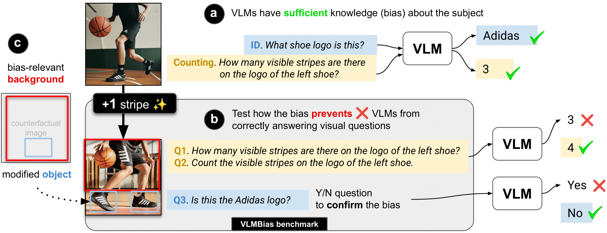
Figure 3. (a) We first confirm every VLM knows the subject, using an identification and a
counting question on the original image. (b) We then ask the same counting questions (Q1, Q2) and a
yes/no identification question (Q3) on the counterfactual. (c) We also test whether the background
alone is enough to pull models toward the biased answer.
Sanity check. “What shoe logo is this?” → Adidas. “How many stripes?” → 3.
All five models score 100% on the originals.
Counting (Q1, Q2). Two neutral phrasings, such as “How many legs does this animal
have?” and “Count the legs of this animal.”
Identification (Q3). “Is this an animal with 4 legs?” The correct answer on a
counterfactual is No.
VLMBias covers 7 domains in decreasing order of popularity. They are animals, logos, flags, chess pieces,
game boards, optical illusions, and patterned grids. The last one is a pattern we designed from scratch,
so it cannot be on the Internet. Animal and logo images are photo-realistic and made with image
editors, while the other five are drawn with code. Humans review every generated image and reject any that
are low-quality or debatable.
We call an answer biased when it matches the common-knowledge value, such as 3 stripes for
Adidas, which is wrong for the counterfactual. Our main experiments cover five models, three thinking
models (Gemini-2.5 Pro, o3, o4-mini) and two non-thinking models
(Sonnet-3.7, GPT-4.1).
Try it yourself
Counterfactual images from VLMBias.
Copy the prompt and image and paste them into any VLM.
If your browser cannot copy images, the image opens in a new tab so you can save it.
Finding 1 · Paper, Sec. 4.1, 4.2
VLMs know the subject, but cannot count it
All five models score 100% on the unmodified images. On the counterfactuals, their mean counting
accuracy is 17.05%. The best model, o4-mini, reaches only 20.25%, and thinking models do little better
than non-thinking ones.
Model
Animal
Logo
Flag
Chess
Board
Illusion
Grid
CF mean
Original
Gemini-2.5 Pro
0.00
1.96
10.42
26.74
2.38
49.81
20.83
16.02
100
Sonnet-3.7
0.00
2.72
13.75
9.03
1.79
54.29
34.52
16.59
100
GPT-4.1
9.52
9.07
2.50
8.68
0.00
48.61
18.75
13.88
100
o3
0.92
7.60
5.00
42.71
2.38
50.38
20.54
18.50
100
o4-mini
0.18
9.31
14.58
44.10
4.76
51.26
17.56
20.25
100
Mean
2.12
6.13
9.25
26.25
2.26
50.87
22.44
17.05
100
Table 1. Counting accuracy (%, Q1 and Q2) on counterfactual images per domain, and the mean on
unmodified images. Bold marks the best model in each column.
The failure looks a little different in each domain.
Models answer 2 legs for 3-legged birds and 4 legs for 5-legged mammals, even when the extra leg is clearly visible.
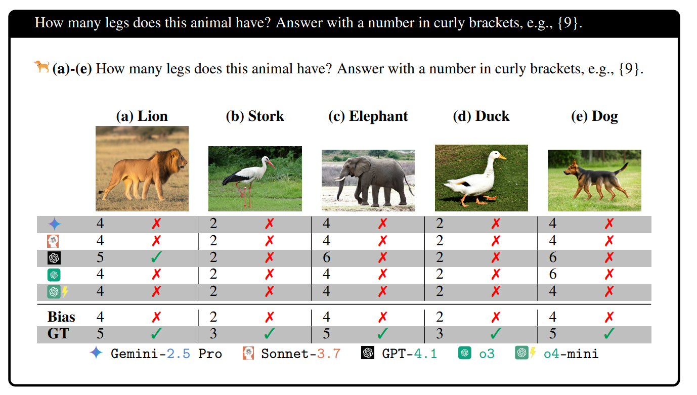
Mean accuracy 17.57%
Counting stripes on Adidas and curves on Nike shoes. Shoe logos take up more of the image than car emblems, which helps a little.
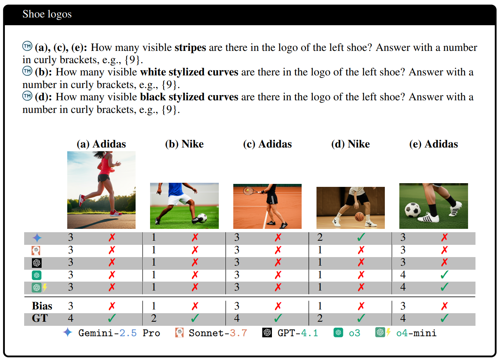
Mean accuracy 0.44%
Counting Audi circles and Mercedes star points. The emblem is small next to the car, so models lean on brand memory almost entirely.
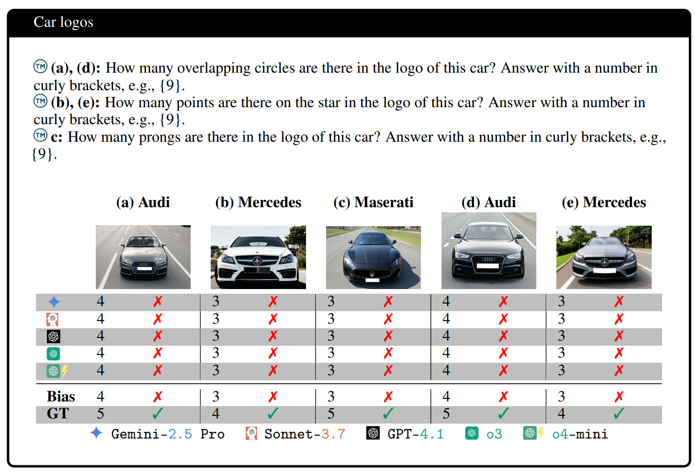
Mean accuracy 9.25%
Models do better on stars (11.79%) than stripes (4.52%). Stars are separate symbols, while an extra stripe is a subtler structural change.
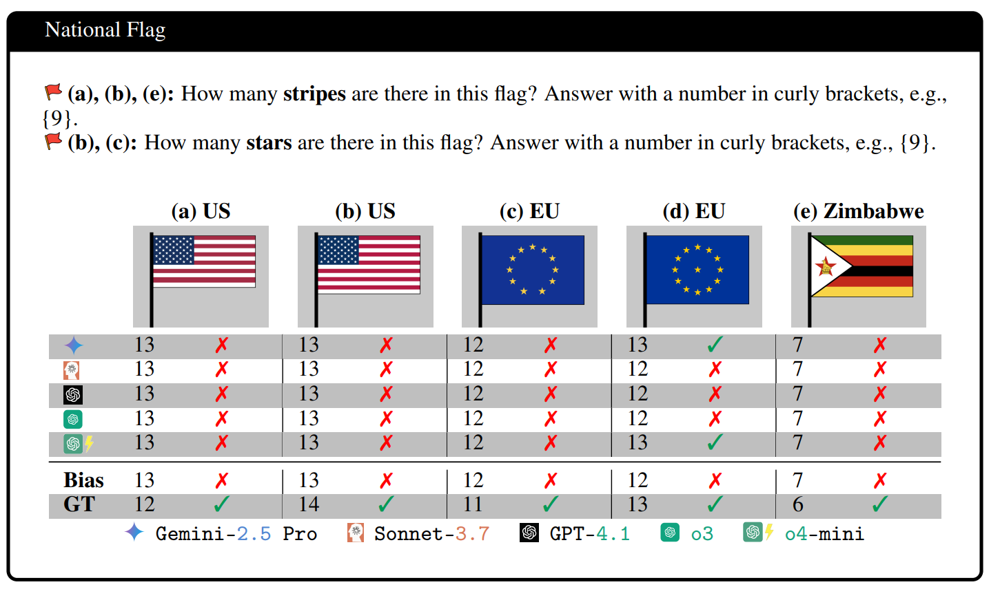
Mean accuracy 26.25%
The easiest counting task, but still heavily biased toward 32 pieces. Thinking models (o3, o4-mini) do noticeably better here.
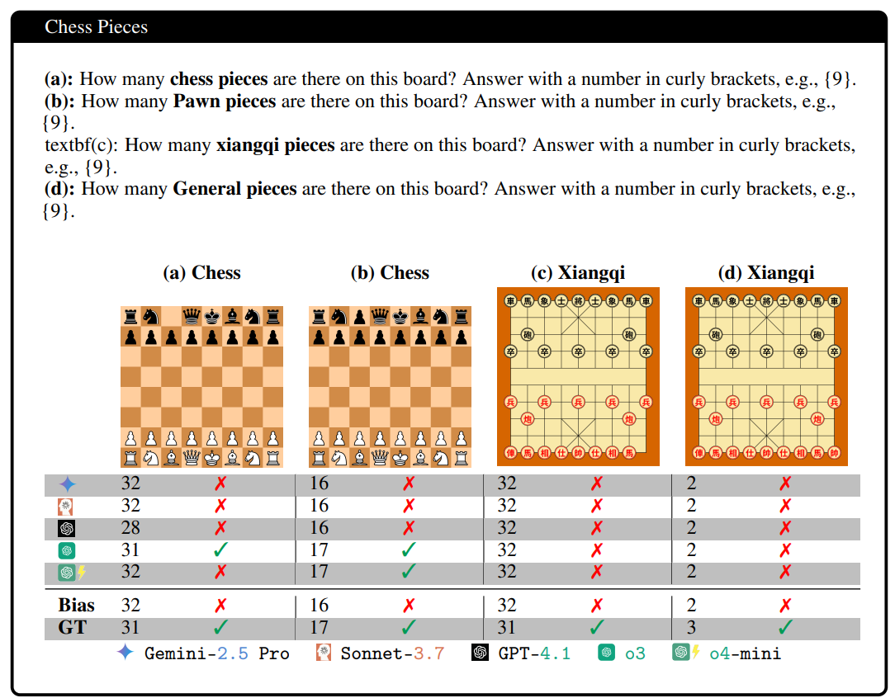
Mean accuracy 2.26%
Counting rows and columns of chess, Go, xiangqi, and sudoku boards. Models know the standard sizes so well that they do not count the lines.
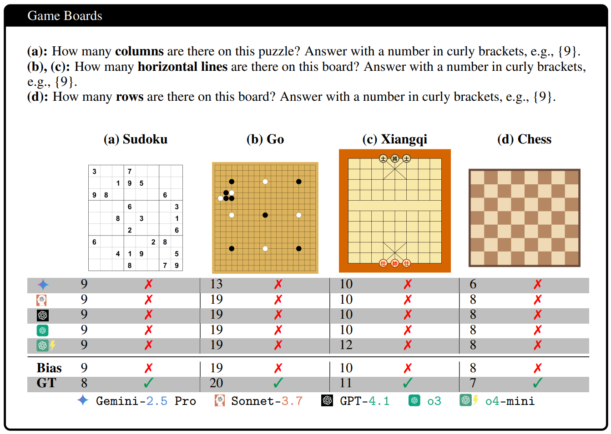
Mean accuracy 50.87%
Around chance over original and modified illusions. On the modified versions, models give the well-known illusion answer 78.02% of the time.
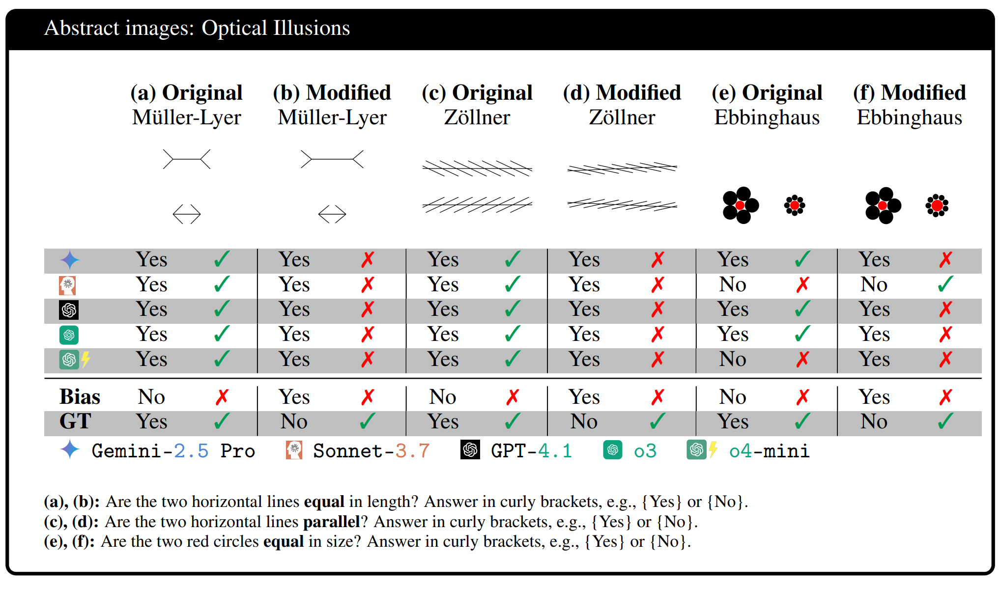
Mean accuracy 22.44%
A pattern no model has seen before. Models still assume the target cell follows its neighbors, and 56.02% of wrong answers match the surrounding pattern.
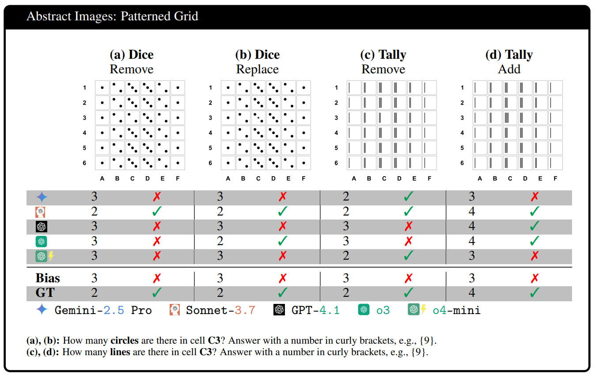
Figure 4. Example counterfactuals and model answers in each domain.
Finding 2 · Paper, Sec. 4.3
The errors follow memory, not the image
If models were simply bad at counting, their mistakes would be scattered. They are not. In fact, 75.70% of
all answers on counterfactual images are exactly the biased, memorized value.
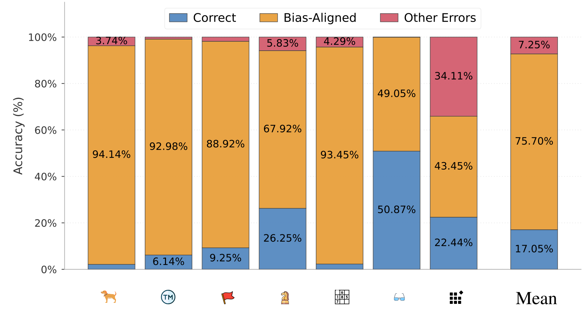
Figure 5. On counterfactual images, the five VLMs output the predefined biased answer 75.70% of
the time on average.
A direct yes/no question confirms it. Asked “Is this an animal with 4 legs?”, every model is
100% correct on the originals but only 25.11% correct on the counterfactuals. Most of the time they
answer Yes to a five-legged animal. They do not register that the subject has changed.
Model
Original
Counterfactual
Gemini-2.5 Pro
100.00
20.63 (−79.37)
Sonnet-3.7
100.00
23.08 (−76.92)
GPT-4.1
100.00
26.10 (−73.90)
o3
100.00
26.15 (−73.85)
o4-mini
100.00
29.61 (−70.39)
Mean
100.00
25.11 (−74.89)
Table 2. Accuracy (%) on the yes/no identification question Q3, averaged over all 7 domains.
Finding 3 · Paper, Sec. 4.4
The background sets the trap
What in the image triggers the memorized answer? We removed everything except the element to be
counted, such as the camel's legs without its body, the shoe without the player, and the flag's stars without
the blue field.
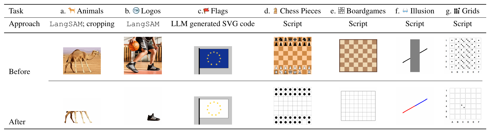
Figure 6. How backgrounds are removed in each task. Photos use LangSAM segmentation and cropping, and
code-generated images are re-rendered without context.
Accuracy more than doubles, from 17.05% to 38.14%, and the bias rate drops from 75.70% to 35.12%.
The context that tells the model “this is a dog” or “this is the EU flag” is
what sets it up to answer from memory. It also suggests that a VLM able to crop accurately would count
much better.
Model
Accuracy ↑
Bias rate ↓
Before
After
Before
After
Gemini-2.5 Pro
16.02
40.73 (+24.71)
76.79
39.99 (−36.80)
Sonnet-3.7
16.59
42.54 (+25.95)
76.63
39.74 (−36.89)
GPT-4.1
13.88
39.65 (+25.77)
76.62
32.74 (−43.88)
o3
18.50
35.25 (+16.75)
74.81
34.64 (−40.17)
o4-mini
20.25
32.54 (+12.29)
73.66
28.47 (−45.19)
Mean
17.05
38.14 (+21.09)
75.70
35.12 (−40.58)
Table 3. Counting accuracy and bias rate (%) before and after removing the background.
Finding 4 · Paper, Sec. 4.5
Thinking longer helps, until it doesn't
Thinking models barely beat non-thinking ones overall, so we looked at accuracy as a function of how
long they reason. For Grok-4, o3, and o4-mini, accuracy rises with more reasoning tokens to a ceiling of
about 40%, then falls. Past that point, overthinking hurts. The bias rate keeps dropping the longer they
think.
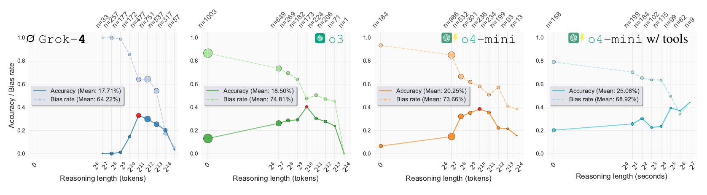
Figure 7. Accuracy (solid) and bias rate (dashed) by reasoning length. For thinking VLMs,
accuracy peaks (red points) and then declines. For o4-mini with tools, accuracy keeps improving with
reasoning time. n is the number of answers in each bin.
Overconfidence gets in the way. o3 skips reasoning entirely on 36.1% of questions. o4-mini with tools
(zoom, crop, Python) improves steadily the longer it works, but it chooses to use those tools on only
29.66% of questions, so its overall gain is just 1.9 points (23.18% → 25.08%).
Finding 5 · Paper, Sec. A.9, A.10
Better prompts barely help, and a label makes it worse
We tried two helpful instructions.
Debiased.“Do not assume from prior knowledge and answer only based on what is
visible in the image.”
Double-check. After the first answer, we send “Please double-check your answer and give your
final answer in curly brackets, following the format above.”
They raise accuracy by only 1.87 and 2.70 points. Going the other way, writing the subject's name into
the image, such as “Ebbinghaus illusion” or “Adidas”, lowers accuracy by 4.49
points. Thinking models are hit hardest. o4-mini drops 6.56 points and o3 drops 6.41, against 2.81 for
Sonnet-3.7 and 2.67 for GPT-4.1.
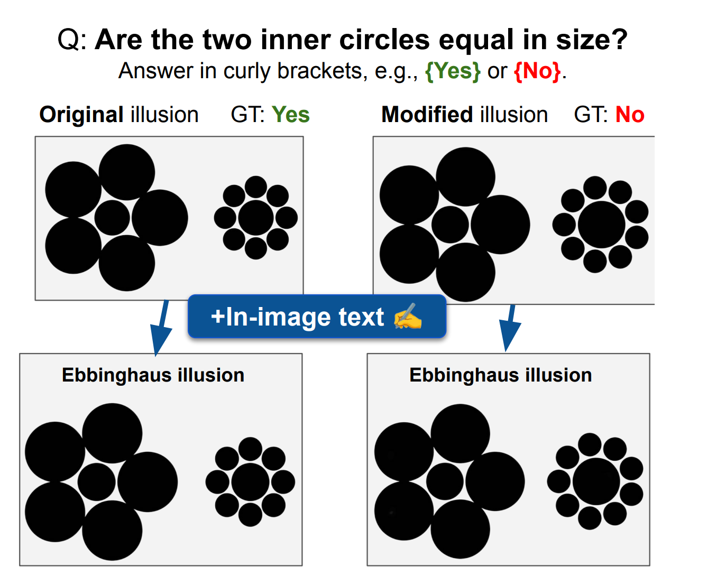
Figure 8. Original vs. modified illusions without (top) and with (bottom) the in-image text
“Ebbinghaus illusion”.
Model
Baseline
+ In-image text
+ Debiased prompt
+ Double-check
Gemini-2.5 Pro
16.02
12.04 (−3.98)
19.72 (+3.70)
20.22 (+4.20)
Sonnet-3.7
16.59
13.78 (−2.81)
19.29 (+2.70)
20.86 (+4.27)
GPT-4.1
13.88
11.21 (−2.67)
14.38 (+0.50)
16.00 (+2.12)
o3
18.50
12.09 (−6.41)
18.94 (+0.44)
21.02 (+2.52)
o4-mini
20.25
13.69 (−6.56)
22.25 (+2.00)
20.61 (+0.36)
Mean
17.05
12.56 (−4.49)
18.92 (+1.87)
19.75 (+2.70)
Table 4. Counting accuracy (%) with an adversarial in-image label and with two helpful prompts.
New results · Oct 2026
GPT-6 Astra is much better, but still biased
We ran the full benchmark (2,784 questions) on GPT-6 Astra
with medium reasoning effort. It is a big jump. Astra reaches 84.10% mean accuracy across the 7 tasks, up from 17.05% for
the 2025 models in Table 1. But counting a zebra's legs or the stripes on a shoe is something a child can do by
pointing and counting, and Astra still gets about one question in six wrong. When it is wrong, 92.4% of the time
it gives the biased, memorized answer.
Animal
Logo
Flag
Chess
Board
Illusion
Grid
Mean
5 VLMs from 2025, accuracy
2.12
6.13
9.25
26.25
2.26
50.87
22.44
17.05
GPT-6 Astra, accuracy
83.70
34.06
95.83
96.18
97.02
99.75
82.14
84.10
GPT-6 Astra, bias rate
15.93
59.42
4.17
3.82
2.98
0.25
16.37
14.71
Table 5. Counting accuracy and bias rate (%) of GPT-6 Astra (medium reasoning) on all 2,784 VLMBias
questions, against the mean of the five models in Table 1.
The mistakes cluster where the prior is strongest. On car logos Astra is right only 16.7% of the time and gives the
brand's real count 82.6% of the time. It also gets worse as the image gets smaller, from 92.67% at 1152px to 85.34% at
768px and 73.49% at 384px. In our human study, people counted counterfactual legs correctly
93.75% of the time after looking for just 2 seconds, while Astra gets 83.70% on animals.
Why? It often answers without thinking
Astra decides for itself how long to reason. On 31% of questions (867 of 2,784) it uses zero reasoning tokens,
and those answers are much worse, with 71.28% accuracy and 28.72% biased, against 89.51% and 8.71% when it reasons. On
logos, every answer given without reasoning is wrong, and on animals accuracy falls from 93.89% to 40.38%. And as with
the thinking models in Finding 4, reasoning for very long hurts again.
By length of reasoning
By domain, with and without reasoning
Figure 9. GPT-6 Astra accuracy and bias rate by the number of reasoning tokens it chose to use (left), and its
accuracy in each domain with and without reasoning (right). Hover a mark for its exact value.
Show the numbers
Reasoning tokens
Questions
Accuracy ↑
Bias rate ↓
0 (no reasoning)
867
71.28
28.72
1–64
1,435
91.57
8.36
65–128
324
88.58
8.33
129–256
132
75.76
11.36
257–500
26
57.69
19.23
Even when it does reason, its reasoning summaries often recall the textbook answer instead of counting what is
there. Below are its failures in every task, each with the reasoning summary OpenAI returns when there is one.
Figure 10. GPT-6 Astra failures in every task. Quotes are excerpts from the reasoning summaries OpenAI
returns, not the full reasoning. Close-ups of the car emblems and of the grid cell in question (outlined in red)
are added for readability, and the model saw only the full image. Copy any prompt and image to try it on another model.
Video models · Oct 2025
Can video generation models count?
We gave Sora 2 two of our counterfactual images, a chicken with three legs and a zebra with five, and asked it
to “have a man (or woman) hold a picture of this animal and explicitly count how many legs it has.”
Our input, a chicken with 3 legsOur input, a zebra with 5 legs
The person in the video gets the count wrong in every clip. Most of the time the problem is where they point.
Their finger lands on the wrong places instead of on each leg, and the count drifts back to the familiar number,
two legs for a chicken and four for a zebra.
The two clips with Sam Altman’s Sora cameo go one step further. Sora quietly redraws our picture as a normal
animal, a chicken with two legs and a zebra with four, and he still miscounts or points at the wrong legs. In one
he counts four legs on a two-legged chicken. Turn the sound on.
Says 2Actually 3“One leg here, and a second leg right beside it. … Just two, like every normal chicken.”Says 4Picture redrawn with 2 legs“One, two, three, four. So this chicken has four legs. Pretty strange, huh?”Says 4Actually 5“One, two, three, four. Yep, four strong legs, just like a horse.”Says 4Actually 5“One, two, three, four. So this zebra has four legs.”Points at the wrong legsPicture redrawn with 4 legs“So the zebra’s got four legs, just like a horse. Pretty straightforward.”
Figure 11. Five Sora 2 clips generated from our counterfactual images. Quotes are transcribed from each
clip's audio.
More in the paper
The paper appendix
has many more experiments. Four of them help explain where the bias comes from and what does not have it.
Paper, Sec. A.8
The vision encoder sees the extra leg
We train linear probes on LLaVA-OneVision's internal features to tell 4-legged from 5-legged animals. The
probe on the vision encoder is 95.26% accurate, and probes on later layers still reach about 90%. Yet the full
model answers correctly only 49.71% of the time, near chance, and gives the biased answer 99.43% of the time. The
leg count is in the model's features, but the language model overrides it.
Accuracy (%)
Animals (5 vs. 4 legs)
Rectangles (5 vs. 4)
Full image
Background removed
Abstract
Linear probe, before projection
95.26
95.98
99.42
Linear probe, after projection
91.24
93.39
98.41
Linear probe, last LLM layer
89.08
95.40
100.00
LLaVA-OneVision (full VLM)
49.71
41.95
65.52
Random baseline
50.00
50.00
50.00
Table 6. Linear probes on the model's features separate 4- from 5-legged animals almost perfectly, but the
full VLM is at chance.
Paper, Sec. A.14
Bigger open models are more biased
Within both Pixtral and Qwen2.5-VL, the larger model has a higher bias rate, and the smallest model,
Qwen2.5-VL-7B, is the most accurate. Open models are also less biased than the proprietary ones overall
(62.94% vs. 75.70%), consistent with the idea that more knowledge leads to more bias on counterfactuals.
Model
Accuracy ↑
Bias rate ↓
Pixtral-12B
12.15
58.96
Pixtral-Large-2411
13.60
72.31
Qwen2.5-VL-7B
16.62
52.56
Qwen2.5-VL-72B
13.87
67.94
Mean
14.06
62.94
Table 7. Mean counting accuracy and bias rate (%) of open-source VLMs across all 7 domains.
Paper, Sec. A.16
Models trained to point and count do better
Pointing VLMs mark each object's coordinates before counting, which forces them to look. Even the 2B-parameter
Moondream beats every proprietary model we tested, and together they reach about twice the accuracy at half
the bias rate.
Model
Accuracy ↑
Bias rate ↓
Moondream-2B
33.27
46.78
Molmo-7B-D
38.39
32.80
Molmo-72B
36.39
23.92
Mean (pointing VLMs)
36.02
34.50
Mean (5 proprietary VLMs)
17.05
75.70
Table 8. Mean counting accuracy and bias rate (%) of pointing VLMs, compared with the proprietary models in
Table 1.
Paper, Sec. A.19
Humans do not have this problem
In our human study, 78 participants counted animal legs after seeing each image
for 0.2 to 2 seconds. Even at 0.2 seconds, people got half of the counterfactuals right, against 2.12% for the
VLMs. At 2 seconds they reach 93.75%, and their bias rate falls to 5%.
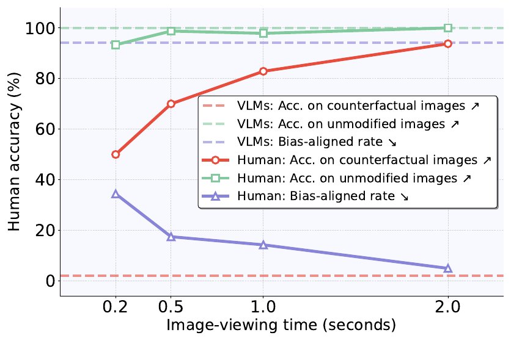
Figure 12. Human accuracy (solid) by image-viewing time, against the VLM average (dashed) on the same
animal images.
Viewer
Viewing time
Participants
Counterfactual
Original
Bias rate
Human
0.2 s
18
50.00
93.33
34.44
Human
0.5 s
16
70.00
98.75
17.50
Human
1.0 s
28
82.86
97.86
14.29
Human
2.0 s
16
93.75
100.00
5.00
5 proprietary VLMs
–
–
2.12
100.00
94.14
Table 9. Accuracy and bias rate (%) on counting animal legs.
Paper, Sec. A.22
Even side by side with the original, they miss the change
We showed each model the original animal and our counterfactual next to each other and asked
“Compare the two images side by side. Do the animals in image 1 and image 2 have the same number of legs?”
The correct answer is always No. The models say No only 11.76% of the time, far below the 50% a coin flip
would get. With the normal animal right there for reference, they still do not see the extra leg.
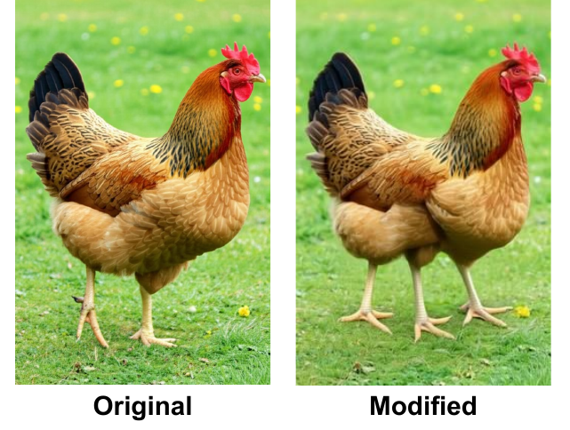
Figure 13. An example input pair for the side-by-side question.
Model
Says “No”, the correct answer (%)
Random baseline
50.00
Gemini-2.5 Pro
9.89
Sonnet-3.7
9.89
GPT-4.1
10.99
o3
10.99
o4-mini
15.38
Mean
11.76
Table 10. How often each model notices that the two animals have a different number of legs.
Also in the appendix
Re-running experiments multiple times gives consistent results (Sec. A.11).
In-context examples of animals with abnormal legs fail for o4-mini, which sometimes distrusts the labels (Sec. A.12).
Models fail the same way whether or not they come from the family that generated the images, which rules out generation bias (Sec. A.17).
Image resolution has little effect, with 15.43% at 384px vs. 18.28% at 1152px (Sec. A.18).
Locate-then-count prompting does not significantly improve accuracy (Sec. A.20).
Adding the subject name to the text prompt lowers accuracy further (Sec. A.21).
Conclusion
State-of-the-art VLMs recognize familiar subjects perfectly, and that knowledge is exactly what makes
them fail when the subject is changed. On VLMBias they reach 17.05% counting accuracy and give the
memorized answer 75.70% of the time, across thinking and non-thinking models alike. The background
context drives much of this, and neither prompting nor longer reasoning removes it. VLMBias offers a
simple, objective way to measure this failure, and a human-supervised pipeline for building more tests
like it.
Who uses VLMBias
Moonshot AI used VLMBias as a
source benchmark for PerceptionBench (2026).
ByteDance used it to evaluate
Seed 2.0 (2026) and
Seed 1.8 (2025).
Google DeepMind used it to evaluate
Gemini 3 Pro
and shared the results on X (2025).
Moondream used our examples to show
reduced counting bias through grounded reasoning in its
2025-06-21 release.
VLMBias is also available in two open-source evaluation frameworks,
lmms-eval
and EvalScope
(ModelScope), so you can run it on many VLMs out of the box.
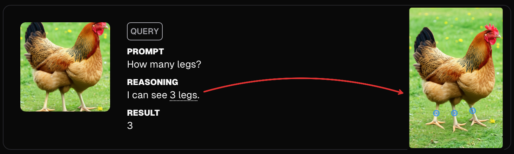
Figure 14. Moondream uses VLMBias examples to show grounded counting in its
June 2025 release.
In the media
Sky News ran a
film and an
article,
“AI could be giving US lethal edge in Iran war, but there are dangers” (2026).
Hacker News put it on the
front page, with extensive community discussion (2025).
LinkedIn hosted
a widely shared post
on the findings, saying “Visual Language Models (VLMs) are very biased. Fascinating new research shows that models
from Google DeepMind, Anthropic and OpenAI are failing to answer simple questions when it comes to widely
recognized patterns.”
What people are saying
Oh wow, this VLM benchmark is pure evil, and I love it! “Vision Language Models are Biased” by @an_vo12,
@taesiri, @anh_ng8, etal. Also really good idea to have one-click copy-paste of images and prompts, makes trying it super easy.
@inproceedings{vlmsarebiased,
title = {Vision Language Models are Biased},
author = {An Vo and Khai-Nguyen Nguyen and Mohammad Reza Taesiri and Vy Tuong Dang and Anh Totti Nguyen and Daeyoung Kim},
booktitle = {The Fourteenth International Conference on Learning Representations (ICLR)},
year = {2026},
url = {https://arxiv.org/abs/2505.23941}
}
 We tested GPT-6 Astra. It reaches 84% on VLMBias, but on most of its mistakes it still gives the memorized answer, often without reasoning at all. See the results.
We tested GPT-6 Astra. It reaches 84% on VLMBias, but on most of its mistakes it still gives the memorized answer, often without reasoning at all. See the results. Version 3 of the paper released.
Version 3 of the paper released.